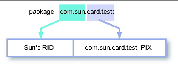
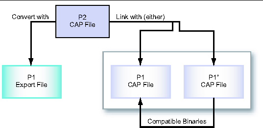

| Virtual Machine Specification, Java Card Platform, v2.2.2 |
| Virtual Machine Specification, Java Card Platform, v2.2.2 |
| C H A P T E R 4 |
|
Binary Representation |
This chapter presents information about the binary representation of Java Card programs. Java Card technology-based binaries ("Java Card binaries") are usually contained in files, therefore this chapter addresses binary representation in terms of this common case.
Several topics relating
to binary representation are covered. The first section describes the
basic organization of program representation in export and CAP files,
as well as the use of the Java Archive (JAR) file containers. The
second section covers how Java Card applets and packages are named
using unique identifiers. The third section presents the scheme used
for naming and linking items within Java Card API packages. The fourth
and fifth sections describe the constraints for upward compatibility
between different versions of a Java Card technology-based binary
("Java Card binary") program file, and versions assigned based upon
that compatibility.
Archive (JAR) file containers. The
second section covers how Java Card applets and packages are named
using unique identifiers. The third section presents the scheme used
for naming and linking items within Java Card API packages. The fourth
and fifth sections describe the constraints for upward compatibility
between different versions of a Java Card technology-based binary
("Java Card binary") program file, and versions assigned based upon
that compatibility.
Java programs are represented in compiled, binary form as class files. Java class files are used not only to execute programs on a Java virtual machine, but also to provide type and name information to a Java compiler. In the latter role, a class file is essentially used to document the API of its class to client code. That client code is compiled into its own class file, including symbolic references used to dynamically link to the API class at runtime.
Java Card technology uses a different strategy for binary representation of programs. Executable binaries and interface binaries are represented in two separate files. These files are respectively called CAP files (for converted applet) and export files.
Export files are not used directly on a device that implements a Java Card virtual machine. However, the information in an export file is critical to the operation of the virtual machine on a device. An export file can be produced by a Java Card converter when a package is converted. This package's export file can be used later to convert another package that imports classes from the first package. Information in the export file is included in the CAP file of the second package, then is used on the device to link the contents of the second package to items imported from the first package.
A Java Card technology-based export file ("Java Card export file") contains the public interface information for an entire package of classes. This means that an export file only contains information about the public API of a package, and does not include information used to link classes within a package.
The name of an export file is the last portion of the package specification followed by the extension `.exp'. For example, the name of the export file of the javacard.framework package must be framework.exp. Operating systems that impose limitations on file name lengths may transform an export file's name according to their own conventions.
For a complete description of the Java Card export file format, see Chapter 5, "The Export File Format".
A Java Card CAP file contains a binary representation of a package of classes that can be installed on a device and used to execute the package's classes on a Java Card virtual machine.
A CAP file is produced by a Java Card converter when a package of classes is converted. A CAP file consists of a set of components, each of which describes a different aspect of the contents. The set of components in a CAP file can vary, depending on whether the file contains a library or applet definition(s).
For a complete description of the Java Card CAP file format, see Chapter 6, "The CAP File Format".
The JAR file format is used as the container format for CAP files. What this specification calls a "CAP file" is just a JAR file that contains the required set of CAP components (see Chapter 6, "The CAP File Format").
CAP file components are stored as files in a JAR file. Each CAP file component is located in a subdirectory called javacard that is in a directory representing the package. For example, the CAP file components of the package com.sun.framework are located in the directory com/sun/framework/javacard.
An export file may also be contained in a JAR file, whether that JAR file contains CAP file components or not. If an export file is included, it must be located in the same directory as the components for that package would be.
The name of a JAR file containing CAP file components is not defined as part of this specification. Other files, including CAP file components for another package, may also reside in a JAR file that contains CAP file components.
This section describes the mechanism used for naming applets and packages in Java Card CAP files and export files, and custom components in Java Card CAP files. Java class files use Unicode strings to name Java packages. As the Java Card platform does not include support for strings, an alternative mechanism for naming is provided.
ISO 7816 is a multipart standard that describes a broad range of technology for building smart card systems. ISO 7816-5 defines the AID (application identifier) data format to be used for unique identification of card applications (and certain kinds of files in card file systems). The Java Card platform uses the AID data format to identify applets and packages. AIDs are administered by the International Standards Organization (ISO), so they can be used as unique identifiers.
This section presents a minimal description of the AID data format used in Java Card technology. For complete details, refer to ISO 7816-5, AID Registration Category `D' format.
The AID format used by the Java Card platform is an array of bytes that can be interpreted as two distinct pieces, as shown in TABLE 4-1. The first piece is a 5-byte value known as a RID (resource identifier). The second piece is a variable length value known as a PIX (proprietary identifier extension). A PIX can be from 0 to 11 bytes in length. Thus an AID can be from 5 to 16 bytes in total length.
TABLE 4-1 AID FormatISO controls the assignment of RIDs to companies, with each company obtaining its own unique RID from the ISO. Companies manage assignment of PIXs for AIDs using their own RIDs.
In the Java platform, packages are uniquely identified using Unicode strings and a naming scheme based on internet domain names. In the Java Card platform, packages and applets are identified using AIDs.
Any package that is
represented in an export file must be assigned a unique AID. The AID
for a package is constructed from the concatenation of the company's
RID and a PIX for that package. This AID corresponds to the string name
for the package, as shown in FIGURE 4-1.

Each applet installed on a Java Card technology enabled device must also have a unique AID. This AID is constructed similarly to a package AID. It is a concatenation of the applet provider's RID and PIX for that applet. An applet AID must not have the same value as the AID of any package or the AID of any other applet. The RID of each applet in a package must be the same as the RID of the package.
Custom components defined in a CAP file are also identified using AIDs. Like AIDs for applets and packages, component AIDs are formed by concatenating a RID and a PIX.
This section describes a scheme that allows downloaded software to be linked against APIs on a Java Card technology enabled device. The scheme represents referenced items as opaque tokens, instead of Unicode strings as are used in Java class files. The two basic requirements of this linking scheme are that it allows linking on the device, and that it does not require internal implementation details of APIs to be revealed to clients of those APIs. Secondary requirements are that the scheme be efficient in terms of resource use on the device, and have acceptable performance for linking. And of course, it must preserve the semantics of the Java language.
Classes (including Interfaces) in Java packages may be declared with public or package visibility. A class's methods and fields may be declared with public, protected, package or private visibility. For purposes of this document, we define public classes, public or protected fields, and public or protected methods to be externally visible from the package.
Each externally visible item must have a token associated with it to enable references from other packages to the item to be resolved on a device. There are six kinds of items in a package that require external identification.
Items that are not externally visible are internally visible. Internally visible items are not described in a package's export file, but some such items use private tokens to represent internal references. External references are represented by public tokens. There are three kinds of items that can be assigned private tokens.
An export file contains entries for externally visible items in the package. Each entry holds the item's name and its token. Some entries may include additional information as well. For detailed information on the export file format, see Chapter 5, "The Export File Format".
The export file is used to map names for imported items to tokens during package conversion. The Java Card converter uses these tokens to represent references to items in an imported package.
For example, during the conversion of the class files of applet A, the export file of javacard.framework is used to find tokens for items in the API that are used by the applet. Applet A creates a new instance of framework class OwnerPIN. The framework export file contains an entry for javacard.framework.OwnerPIN that holds the token for this class. The converter places this token in the CAP file's constant pool to represent an unresolved reference to the class. The token value is later used to resolve the reference on a device.
In the context of a CAP file, references to items are made indirectly through a package's constant pool. References to items in other packages are called external, and are represented in terms of tokens. References to items in the same CAP file are called internal, and are represented either in terms of tokens, or in a different internal format.
An external reference to a class is composed of a package token and a class token. Together those tokens specify a certain class in a certain package. An internal reference to a class is a 15-bit value that is a pointer to the class structure's location within the CAP file.
An external reference to a static class member, either a field or method, consists of a package token, a class token, and a token for the static field or static method. An internal reference to a static class member is a 16-bit value that is a pointer to the item's location in the CAP file.
References to instance fields, virtual methods and interface methods consist of a class reference and a token of the appropriate type. The class reference determines whether the reference is external or internal.
External references in a CAP file can be resolved on a device from token form into the internal representation used by the virtual machine.
A token can only be resolved in the context of the package that defines it. Just as the export file maps from a package's externally visible names to tokens, there is a set of link information for each package on the device that maps from tokens to resolved references.
Tokens for an API are assigned by the API's owner and published in the package export file(s) for that API. Since the name-to-token mappings are published, an API owner may choose any order for tokens (subject to the constraints listed below).
A particular device platform can resolve tokens into whatever internal representation is most useful for that implementation of a Java Card virtual machine. Some tokens may be resolved to indices. For example, an instance field token may be resolved to an index into a class instance's fields. In such cases, the token value is distinct from and unrelated to the value of the resolved index.
Each kind of item in a package has its own independent scope for tokens of that kind. The token range and assignment rules for each kind are listed in TABLE 4-2.
All package references from within a CAP file are assigned private package tokens. Package token values must be in the range from 0 to 127, inclusive. The tokens for all the packages referenced from classes in a CAP file are numbered consecutively starting at zero. The ordering of package tokens is not specified.
All externally visible classes and interfaces in a package are assigned public class tokens. Class token values must be in the range from 0 to 254, inclusive. The tokens for all the public classes and interfaces in a package are numbered consecutively starting at zero. The ordering of class tokens is not specified.
Package-visible classes and interfaces are not assigned tokens.
All externally visible static fields in a package are assigned public static field tokens. The tokens for all externally visible static fields in a class are numbered consecutively starting at zero. Static fields token values must be in the range from 0 to 255, inclusive. The ordering of static field tokens is not specified.
Package-visible and private static fields are not assigned tokens. In addition, no tokens are assigned for final static fields that are initialized to primitive, compile-time constants, as these fields are never represented as fields in CAP files.
All externally visible static methods and constructors in a package are assigned public static method tokens. Constructors are included in this category because they are statically bound. Static method token values must be in the range from 0 to 255, inclusive. The tokens for all the externally visible static methods and constructors in a class are numbered consecutively starting at zero. The ordering of static method tokens is not specified.
Package-visible and private static methods as well as package-visible and private constructors are not assigned tokens.
All instance fields defined in a package are assigned either public or private instance field tokens. The scope of a set of instance field tokens is limited to the class that declares the instance fields, not including the fields declared by superclasses of that class.
Instance field token values must be in the range from 0 to 255, inclusive. Public and private tokens for instance fields are assigned from the same namespace. The tokens for all the instance fields in a class are numbered consecutively starting at zero, except that the token after an int field is skipped and the token for the following field is numbered two greater than the token of the int field.
Within a class, tokens for externally visible fields must be numbered less than the tokens for package and private fields. For public tokens, the tokens for reference type fields must be numbered greater than the tokens for primitive type fields. For private tokens, the tokens for reference type fields must be numbered less than the tokens for primitive type fields. Beyond that, the ordering of instance field tokens in a class is not specified.
Virtual methods are instance methods that are resolved dynamically. The set includes all public, protected and package-visible instance methods. Private instance methods and all constructors are not virtual methods, but instead are resolved statically during compilation.
All virtual methods defined in a package are assigned either public or private virtual method tokens. Virtual method token values must be in the range from 0 to 127, inclusive. Public and private tokens for virtual methods are assigned from different namespaces. The high bit of the byte containing a virtual method token is set to one if the token is a private token.
Public tokens for the externally visible (public or protected) introduced virtual methods in a class are numbered consecutively starting at one greater than the highest numbered public virtual method token of the class's superclass. If a method overrides a method implemented in the class's superclass, that method is assigned the same token number as the method in the superclass. The high bit of the byte containing a public virtual method token is always set to zero, to indicate it is a public token. The ordering of public virtual method tokens in a class is not specified.
Private virtual method tokens are assigned to package-visible virtual methods. They are assigned differently from public virtual method tokens. If a class and its superclass are defined in the same package, the tokens for the package-visible introduced virtual methods in that class are numbered consecutively starting at one greater than the highest numbered private virtual method token of the class's superclass. If the class and its superclass are defined in different packages, the tokens for the package-visible introduced virtual methods in that class are numbered consecutively starting at zero. If a method overrides a method implemented in the class's superclass, that method uses the same token number as the method in the superclass. The definition of the Java programming language specifies that overriding a package-visible virtual method is only possible if both the class and its superclass are defined in the same package. The high bit of the byte containing a virtual method token is always set to one, to indicate it is a private token. The ordering of private virtual method tokens in a class is not specified.
All interface methods defined in a package are assigned public interface method tokens, as interface methods are always public. Interface methods tokens values must be in the range from 0 to 127, inclusive. The tokens for all the interface methods defined in or inherited by an interface are numbered consecutively starting at zero. The token value for an interface method in a given interface is unrelated to the token values of that same method in any of the interface's superinterfaces. Each interface includes its own token values for all the methods inherited from super-interfaces as well as its defined methods. The high bit of the byte containing an interface method token is always set to zero, to indicate it is a public token. The ordering of interface method tokens is not specified.
In the Java programming language the granularity of binary compatibility can be between classes since binaries are stored in individual class files. In Java Card systems Java packages are processed as a single unit, and therefore the granularity of binary compatibility is between packages. In Java Card systems the binary of a package is represented in a CAP file, and the API of a package is represented in an export file.
In a Java Card system, a change to a type in a Java package results in a new CAP file. A new CAP file is binary compatible with (equivalently, does not break compatibility with) a preexisting CAP file if another CAP file converted using the export file of the preexisting CAP file can link with the new CAP file without errors.
shows an example of
binary compatible CAP files, p1 and p1'. The preconditions for the
example are: the package p1 is converted to create the p1 CAP file and
p1 export file, and package p1 is modified and converted to create the
p1' CAP file. Package p2 imports package p1, and therefore when the p2
CAP file is created the export file of p1 is used. In the example, p2
is converted using the original p1 export file. Because p1' is binary
compatible with p1, p2 may be linked with either the p1 CAP file or the
p1' CAP file.
FIGURE 4-2 Binary Compatibility Example
Any modification that causes binary incompatibility in the Java programming language also causes binary incompatibility in Java Card systems. These modifications are described as causing a potential error in The Java Language Specification. Any modification that does not cause binary incompatibility in the Java programming language does not cause binary incompatibility in a Java Card system, except under the following conditions:
Tokens are used to resolve references to imported elements of a package. If a token value is modified, a linker on a device is unable to associate the new token value with the previous token value of the element, and therefore is unable to resolve the reference correctly.
Compile-time constants are not stored as fields in CAP files. Instead their values are recorded in export files and placed inline in the bytecodes in CAP files. These values are said to be pre-linked in a CAP file of a package that imports those constants. During execution, information is not available to determine whether the value of an inlined constant is the same as the value defined by the binary of the imported package.
As described above, tokens assigned to public and protected virtual methods are scoped to the hierarchy of a class. Tokens assigned to public and protected virtual methods introduced in a subclass have values starting at one greater than the maximum token value assigned in a superclass. If a new, non-override, public or protected virtual method is introduced in a superclass it is assigned a token value that would otherwise have been assigned in a subclass. Therefore, two unique virtual methods could be assigned the same token value within the same class hierarchy, making resolution of a reference to one of the methods ambiguous.
The addition of an externally visible, non-override method to a public interface is a binary incompatible change. It allows classes which are not themselves abstract to contain an abstract method. For example, consider the case of an interface I implemented by a class C that is not abstract, where I and C reside in different packages. If a new method is added to I, creating I', then C cannot link with the new version of I' because this would result in the class C containing an abstract method without the class C being abstract. The fact that C can not link with I' means that I and I' are not binary compatible.
Each implementation of a package in a Java Card system is assigned a pair of major and minor version numbers. These version numbers are used to indicate binary compatibility or incompatibility between successive implementations of a package.
The major and minor versions of a package are assigned by the package provider. It is recommended that the initial implementation of a package be assigned a major version of 1 and a minor version of 0. However, any values may be chosen. It is also recommended that when either a major or a minor version is incremented, it is incremented exactly by 1.
A major version must be changed when a new implementation of a package is not binary compatible with the previous implementation. The value of the new major version must be greater than the major version of the previous implementation. When a major version is changed, the associated minor version must be assigned the value of 0.
When a new implementation of a package is binary compatible with the previous implementation, it must be assigned a major version equal to the major version of the previous implementation. The minor version assigned to the new implementation must be greater than the minor version of the previous implementation.
Both an export file and a CAP file contain the major and minor version numbers of the package described. When a CAP file is installed on a Java Card technology-enabled device a resident image of the package is created, and the major and minor version numbers are recorded as part of that image. When an export file is used during preparation of a CAP file, the version numbers indicated in the export file are recorded in the CAP file.
During installation, references from the package of the CAP file being installed to an imported package can be resolved only when the version numbers indicated in the export file used during preparation of the CAP file are compatible with the version numbers of the resident image. They are compatible when the major version numbers are equal and the minor version of the export file is less than or equal to the minor version of the resident image.
| Virtual Machine Specification, Java Card Platform, v2.2.2 | 3-11-06 |
Copyright © 2005, Sun Microsystems, Inc. All Rights Reserved.